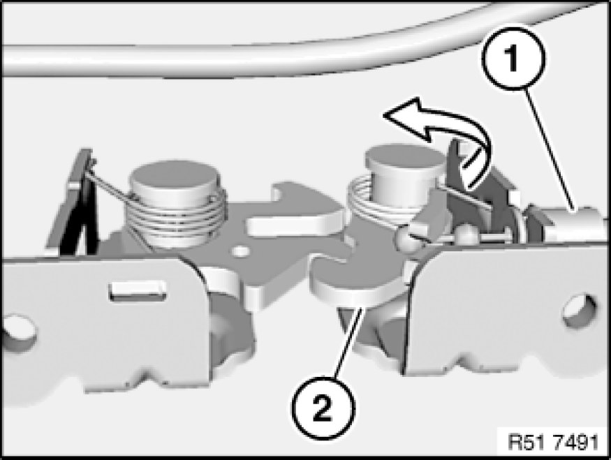
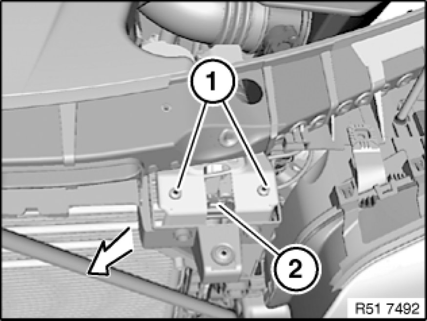

Removing and Installing/Replacing Left Engine Hood Lock
51 23 110 - Removing and installing/replacing left engine hood lock

Necessary preliminary tasks:
- Remove front bumper trim
- Remove front air duct 51 11 770 Removing and Installing/Replacing Left or Right Deformation Element For Front Bumper

Note:
Engine hood lock (2) shown without attachment parts for purposes of clarity.
Disengage Bowden cable (1) in direction of arrow from engine hood lock (2).

Release screws (1) and remove engine hood lock (2) at an angle towards front.